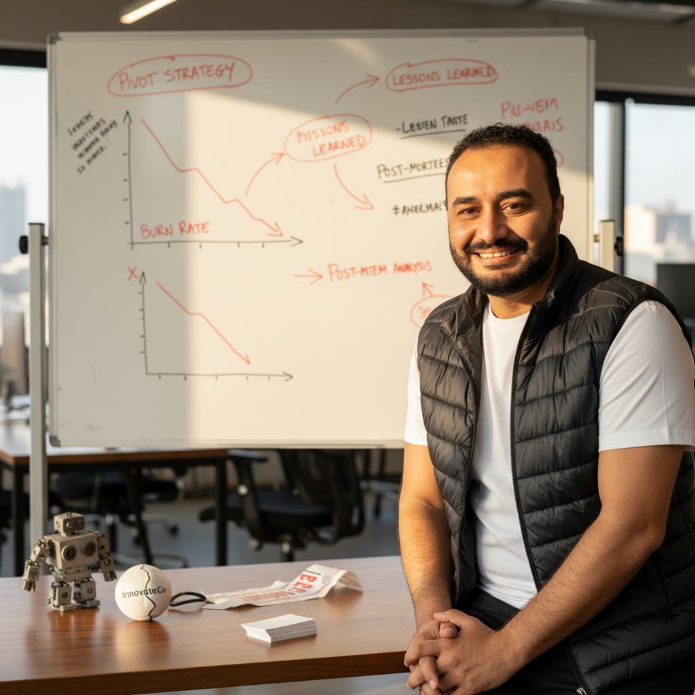

I
الانهيار
بنيتُ شيئاً آمنتُ به. ثم رأيتُه يموت — ببطء، في صمت، بينما كل المؤشرات ما زالت خضراء. حين أفصحت الأرقام أخيراً، كانت الشركة قد رحلت. بدأ التشريح قبل الجنازة بوقت طويل.

أنا محمد خليل. أدرس موت الشركات—لا لأرثيها، بل لأفهم المؤسس الذي لم يرَ ما هو قادم. وفي الغالب.. كان ذلك المؤسس أنا.
بنيتُ شيئاً آمنتُ به. ثم رأيتُه يموت — ببطء، في صمت، بينما كل المؤشرات ما زالت خضراء. حين أفصحت الأرقام أخيراً، كانت الشركة قد رحلت. بدأ التشريح قبل الجنازة بوقت طويل.
معظم الشركات لا تفشل بسبب السوق؛ تفشل لأن المؤسس توقّف عن الرؤية بوضوح. أنا توقّفتُ. نقاط العمى لم تكن في الجداول — بل كانت فيّ.
عدتُ إلى كل انهيار — انهياري وانهيارات مئات غيري. قرأتُ التشريحات، وجلستُ مع المؤسسين.. ورصدتُ الأنماط التي لم يُرِد أحدٌ تسميتها. خبير الفشل هو ما خرج من تلك الهواجس: منهجية، لا علامة تجارية.
أدرس سيكولوجية المؤسسين الذين انكسروا؛ التشوهات المعرفية، حلقات الإنكار، والقرارات التي بدت منطقية في حينها وانفجرت بعد 18 شهراً. هذا ليس تدريباً؛ هذا تحليل جنائي للإنسان داخل الشركة.
"لستُ هنا لأحفّزك..
أنا هنا لأُريك ما ترفض أنت رؤيته.— محمد خليل
لا مسرح تحفيزي، ولا تنظير كليشيهات LinkedIn. البيانات وحدها قاسية بما يكفي.
لكل انهيار توقيعه البشري الخالص؛ نتتبّع مسار القرار حتى نصل إلى الحالة المعرفية التي أنتجته.
مئات التشريحات المترابطة والمقارنة.. الأنماط تتكرر دائماً، ونحن نسمّيها قبل أن تتكرر فيك.
من أرشيف الفشل
تحليل صريح لإشارات التحذير الصامتة، ومشاهد الفشل الخفية في شركات تشبه شركتك تماماً.
بريد محمي بالسرية التامة · إلغاء الاشتراك بنقرة واحدة
إن وصلتَ إلى هنا.. فشيء ما في شركتك لا يبدو صحيحاً بالفعل.
ثق بهذا الإحساس الباطني. معظم المؤسسين يصلون إليّ متأخرين 6 أشهر.. لا تكن أحدهم.
اطلب تشريحاً لشركتك الآن